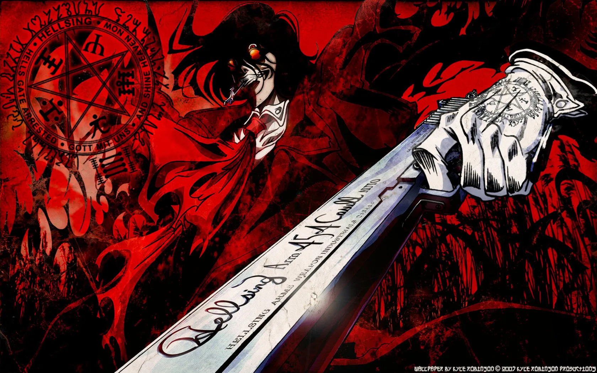
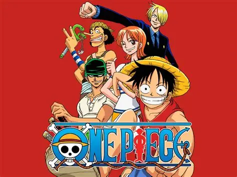
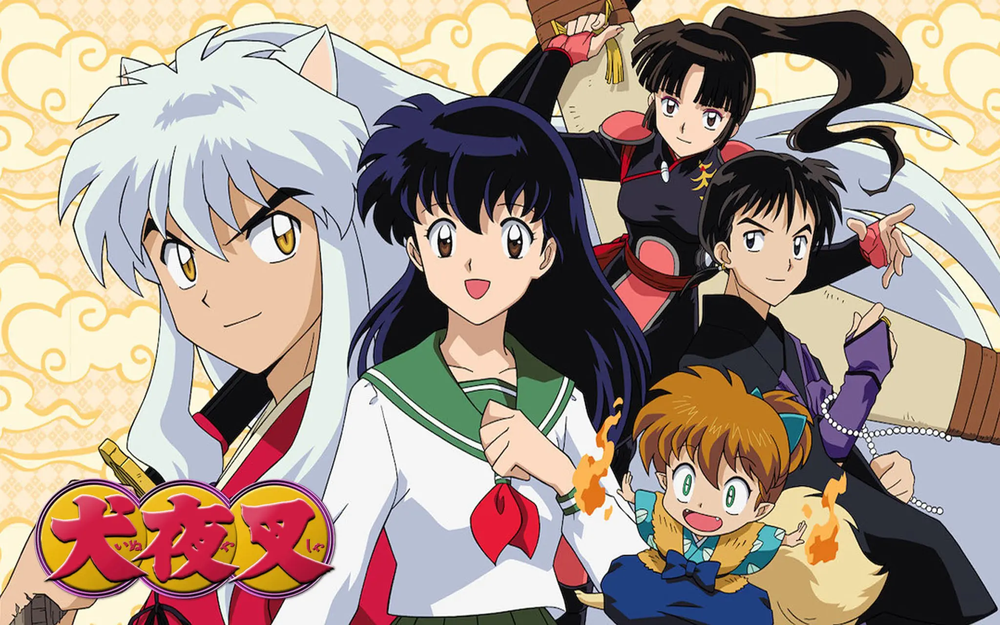

Hellsing is a Japanese manga series by Kouta Hirano, which was adapted into two anime series and the OVA series Hellsing Ultimate. It follows the secret, British-based Hellsing Organization as it battles supernatural threats, primarily vampires, using its most powerful weapon: the vampire Alucard. The story is set in a modern-day England and involves conflict with ghouls, other vampires, and the Vatican's own anti-vampire organization.
The conflict: The Hellsing Organization must fight against various supernatural forces, including a resurrected Nazi battalion and rogue elements from the Vatican.
Hellsing info here
One Piece is a Japanese manga series written and illustrated by Eiichiro Oda. It follows the adventures of Monkey D. Luffy and his crew, the Straw Hat Pirates, as he explores the Grand Line in search of the mythical treasure known as the "One Piece" to become the next King of the Pirates.
One Piece has received praise for its storytelling, expansive worldbuilding, art, characterization, and humor. It is regarded by critics and readers as one of the greatest manga series of all time.
One Piece Info
I still vividly remember the first time I accidentally stumbled into InuYasha. I couldn’t have been more than seven years old. I couldn’t sleep so I snuck out into the living room to watch TV. Unbeknownst to me, Cartoon Network had transitioned to its after-hours programming. With the quiet glow of the screen, I saw him for the first time.
The image of the sword-swinging dog-eared boy with the silver locks embedded into my subconscious and was reawakened when I picked up a copy of the manga some years later — my introduction to the medium. This led to me reading all 56 volumes of the original manga and watching all 193 episodes of the anime series, all before I left elementary school. I successfully convinced all of my friends to join in on my obsession and I proudly served as one of the cultivators of anime and Japanese pop culture in my small hometown where the Asian population was less than five percent.
InuYasha Info